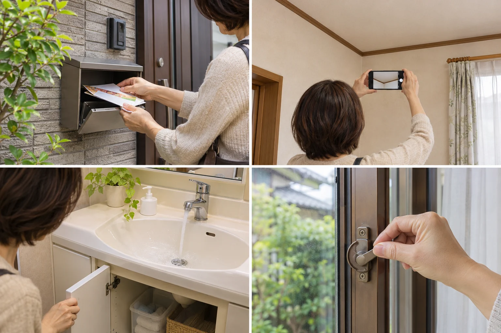
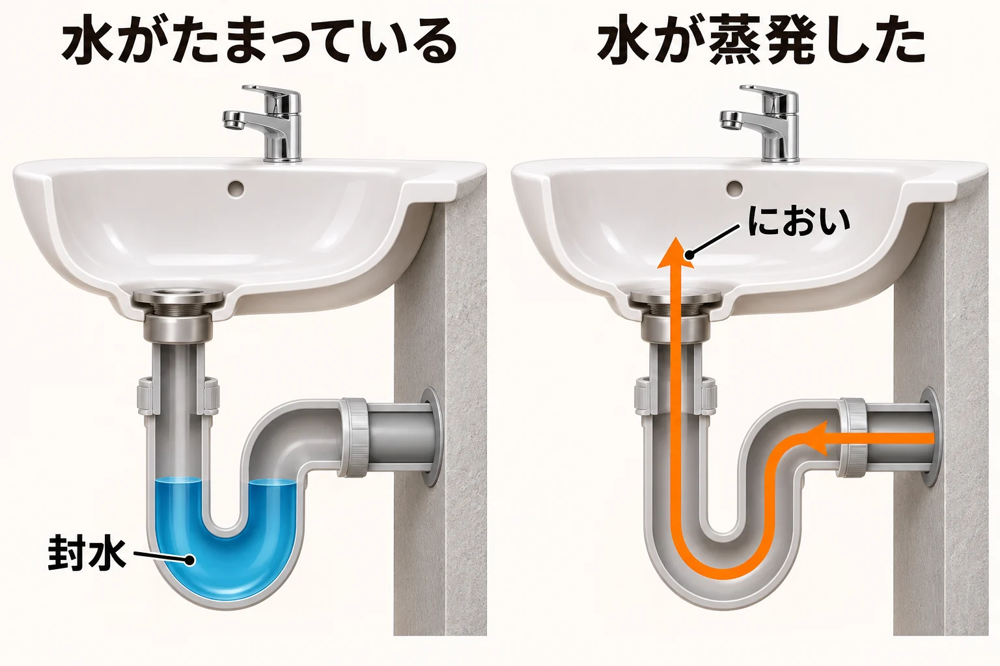

親の入院や、冬の間の同居。しばらく実家を空けることになったとき、「戸締まりのほかに何をしておけばいい？」「電気や水道は止めていい？」と迷うこともありますね。
帰ってこられる家を守るには、出る前の準備と、留守中に誰が何を確認するかを一緒に決めておくと安心です。この記事では、家を空ける日のチェックから見回り、帰宅前の準備までを順に整理します。
出発前のチェックから見回りまで、帰ってこられる家を守る準備
公開日：
 文｜エイスケ（住宅と教育の専門家）
文｜エイスケ（住宅と教育の専門家）

親の入院や、冬の間の同居。しばらく実家を空けることになったとき、「戸締まりのほかに何をしておけばいい？」「電気や水道は止めていい？」と迷うこともありますね。
帰ってこられる家を守るには、出る前の準備と、留守中に誰が何を確認するかを一緒に決めておくと安心です。この記事では、家を空ける日のチェックから見回り、帰宅前の準備までを順に整理します。
荷造りと一緒に、家の中と外もひと回り。下の項目を家族で分担し、済んだものからチェックしておきましょう。配達の停止や冷蔵庫の片付けは、出発の数日前から始めると慌てずにすみます。
| 確認すること | 具体的にすること |
|---|---|
| □ 戸締まり | 玄関・勝手口に加え、浴室やトイレの小窓、2階の窓も施錠。換気のために窓を開けたまま出かけない。 |
| □ 家の外 | 屋外に置いた合鍵は回収し、脚立やはしごは片付ける。見回り用の鍵は、頼む人へ直接渡す。 |
| □ 配達物 | 郵便・新聞・定期便の受け取り方を決める。停止後も入るチラシなどは、見回り時に回収する。 |
| □ 食品とごみ | 傷みやすい食品を使い切り、ごみは収集日に合わせて出す。冷蔵庫を止める場合は、中を空にして清掃・乾燥させる。 |
| □ 電気と水まわり | 使わない家電のプラグを抜き、洗濯機の給水栓を閉める。残す電源と、水道・ガスの扱いは次の節で確認する。 |
| □ 次の見回り | 担当者・訪問日・連絡先を決める。マンションなら、長期不在の届出方法を管理会社に確認する。 |
日本郵便の不在届で郵便物を保管してもらえる期間は、最長30日です。期間が終わるとまとめて配達されるため、長く空ける場合は家族による回収や、滞在先への転送が使えるかを郵便局へ相談しておきましょう。新聞や宅配の定期便は、それぞれの配達元へ連絡します。
近所へ伝える場合は、日頃から付き合いのある信頼できる人に。留守番電話やSNSで、不特定多数に不在期間を知らせるのは控えましょう。
誰も住まない間も、換気や凍結予防、防犯などで働く設備があります。まず「留守中に使うもの」を書き出し、それから止めるものを決めると、まとめて止めて困る事態を防げます。
使い続ける冷蔵庫、24時間換気、防犯設備など。Wi-Fiにつなぐ遠隔カメラを使うなら、その機器とルーター、インターネット回線も必要です。給湯器の凍結予防は、機種の説明書で確かめます。
テレビや調理家電などは、説明書を確認してプラグを抜きます。冷蔵庫を止めるなら、食品だけでなく製氷用の水や氷も片付け、庫内を拭いて乾燥させておきましょう。
24時間換気がある家は、通常は運転を続け、給気口も説明書に沿って使います。一般の換気扇を長く回す場合は、連続運転できる機種かを確認しましょう。窓を開ける換気は、見回りの人がいる間に行います。
水漏れに備え、洗濯機の給水栓は閉めておきます。家全体の止水栓を閉める場合は、場所と再開方法を確認し、見回りの人にも伝えましょう。ガスは使わない器具の栓を閉め、メーターまわりの操作が必要なら契約先に確認します。
数か月単位の不在になりそうなら、電気・水道・ガスや通信など、使わない契約の一時停止や解約ができるかも確認を。基本料金だけでなく、再開までの日数、立ち会いの要否、解約費用を聞いてから決めましょう。留守中の設備や見回りに必要な電気・水道、遠隔確認に使う通信は、その役目も含めて考えます。
「時間ができた人が行く」だと、予定が重なって誰も行けないこともあります。まず次の一回、誰がいつ行くかを決めましょう。鍵を持つ人と、修理を相談する相手も決めておくと、見回り後の連絡がスムーズです。
次の見回り：＿＿月＿＿日／担当：＿＿さん
鍵を持つ人：＿＿さん／行けないときの相談先：＿＿＿＿
残す電源・水道やガスの設定：＿＿＿＿
異常を見つけたら連絡する人：＿＿さん
修理の相談先：＿＿＿＿／電話：＿＿＿＿
遠方で通いにくければ、地域の管理サービスへ頼む方法もあります。郵便局の「空き家みまもり」は月1回の外観などの確認と写真付き報告が基本です。室内の換気や通水、郵便物の回収も必要なら、依頼できる作業と別料金の有無を比べて選びましょう。
毎回、同じ場所を同じ順に見ると、小さな変化に気づきやすくなります。家族で前回の写真を共有しておくと、交代で見に行くときにも役立ちます。

屋根へ上るなど、危険な確認は業者へ。見回りの帰りに「今日は変わりなし」でも写真と一言を送り、次の訪問日を決めておきましょう。
排水管の途中にたまる水は、下水のにおいを防ぐ「ふた」の役目をしています。長く使わず水が蒸発すると、においが上がってくることがあります。通水できる家では、見回りの際に水を流して補います。水抜きなどの凍結対策をした家は、その管理方法に沿って対応しましょう。

○月○日、担当：○○
変わったところ：居間の天井に新しい染み（写真あり）
次にすること：家族へ連絡し、雨漏りの点検を相談
次回の見回り：○月○日、担当：○○
帰宅当日に慌てず過ごせるように。戻る日が決まったら、家族が先に訪ねて、暮らせる状態かを確かめておきましょう。
退院後などで歩き方や暮らし方が変わる場合は、段差や夜の明かりも一緒に確認を。帰ってから必要なものを、家族で先に話しておくと準備しやすくなります。
出発前・見回り・帰宅前
今の場面を選んで、一つずつ確かめましょう。
読み込み中です。表示されないときは、ページを再読み込みしてください。
出発前の確認 1 / 6
残り 6 項目
まだ決まっていません
通知や自動共有はされません。見回りの日・担当者・連絡先は、家族に伝えておきましょう。
選び直すと、関係する項目は未確認に戻ります。扱い方が分からなければ、説明書やメーカー・施工者に確認してください。
まだ保存していません。
同じ端末・ブラウザーでこのページを開くと、保存した続きから再開できます。変更したら、もう一度保存してください。保存前にページを閉じたり再読み込みしたりすると、変更が消えます。ブラウザーのデータ削除やプライベート閲覧では、保存した記録も消えることがあります。
チェック・設定・予定日は、このブラウザー内だけに保存し、外へは送りません。共用端末では保存を控えてください。
設備は説明書に従って扱い、異常があれば作業を止めて専門家に相談してください。このチェックは、安全や設備の正常な動作を保証しません。出典・参考資料を見る
「出発前に残っている準備は？ 次に見に行くのは、誰がいつ？」
チェックリストを見ながら分担し、鍵と連絡先、残しておく電源を共有してみましょう。
給水・排水・給湯設備、換気設備、浄化槽、給湯器、玄関の鍵、雨どい
部屋・建材・設備から機能を確かめる ↗関連記事
この記事を書いた人｜エイスケ
1986年生まれ。実家の工務店・不動産に10年間従事したのち、教育の世界へ。住宅と教育、両方の視点から「豊かな暮らし」をテーマに執筆します。※本コラムは筆者個人の見解・経験に基づくものです。最終的な判断は各分野の専門家にご相談ください。